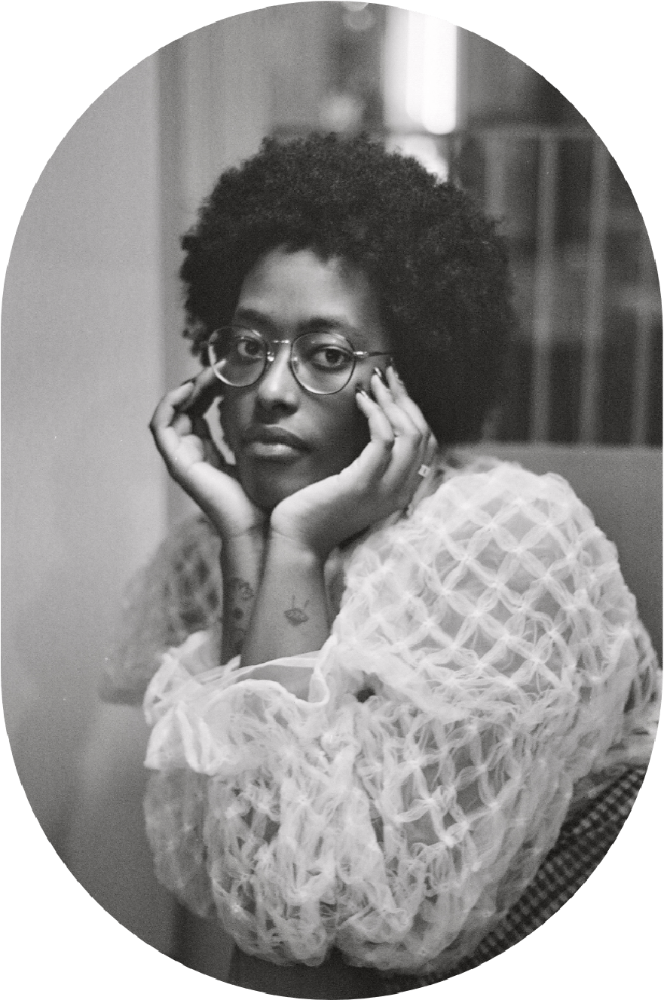
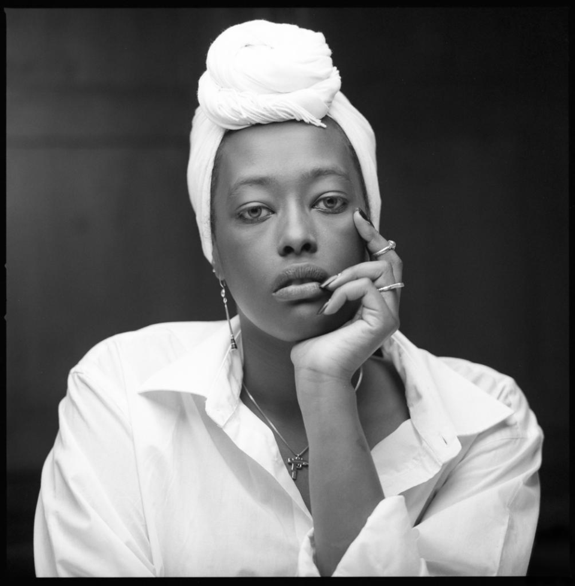
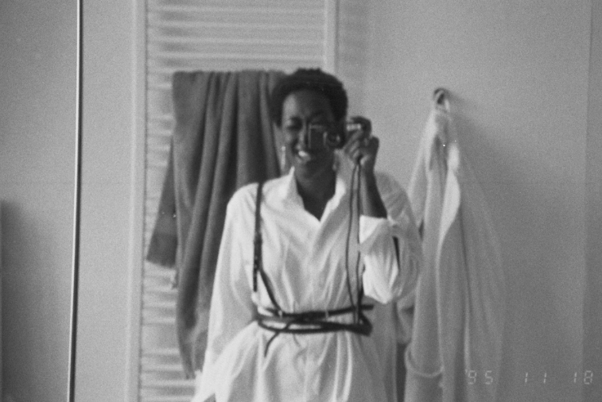

Ria is a dynamic and multifaceted artist whose photography continues to evolve, shaped by her diverse experiences across Europe and Africa.
  Originally from Belgium and Rwanda, Ria grew up in South Africa and Switzerland before relocating to Florence, Italy, to study photography.
Graduating in 2020, she expanded her creative horizons by moving to Berlin, where she took on roles as a creative director and producer while continuing to work as a freelance photographer. Now based in Brussels, Ria navigates multiple artistic domains, pushing the boundaries of her craft. Her work spans lifestyle, fashion, and portrait photography, with a deep connection to film photography.
Ria draws inspiration from strong, dedicated women and is committed to fostering the growth of the female photography community.
Her talent has been recognized through numerous exhibitions, and she remains dedicated to exploring new creative frontiers.